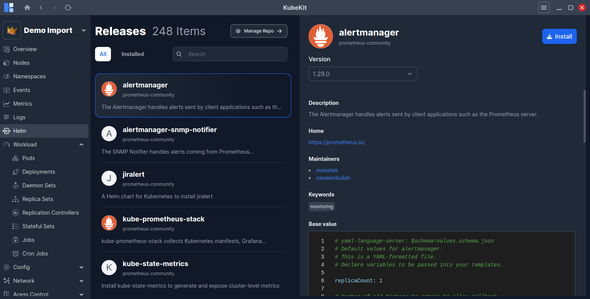
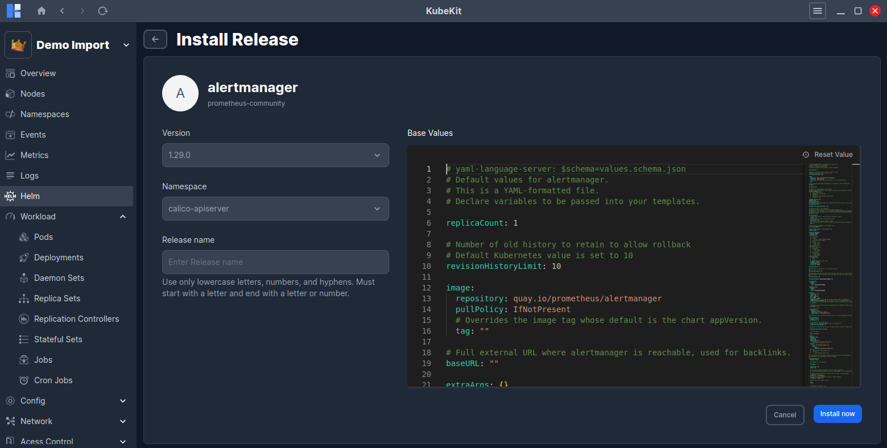
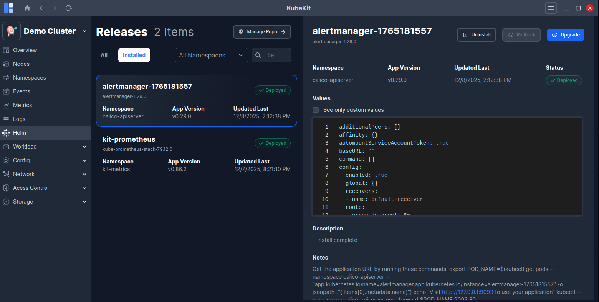
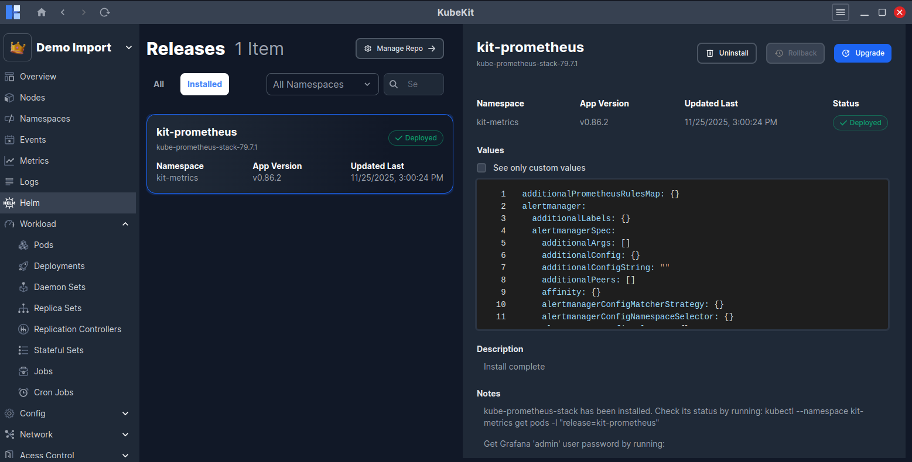
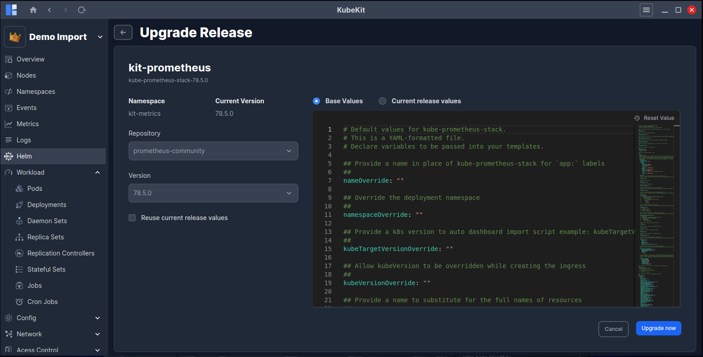
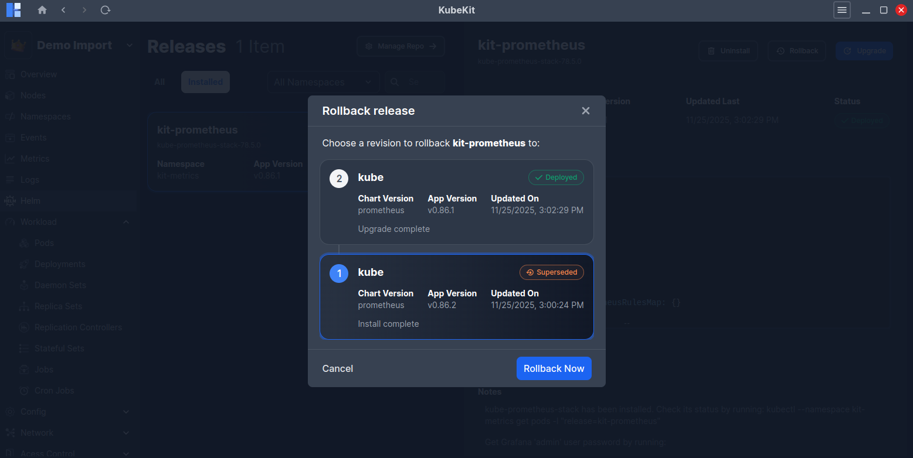
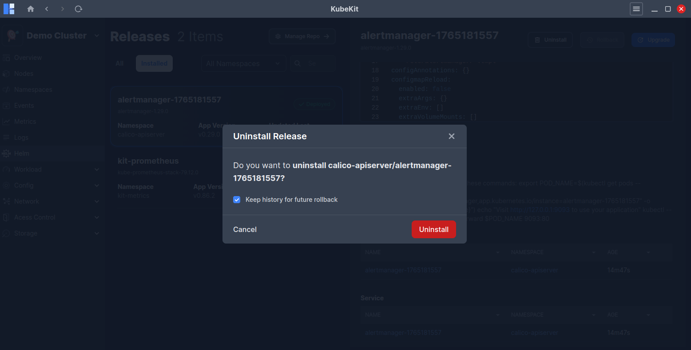
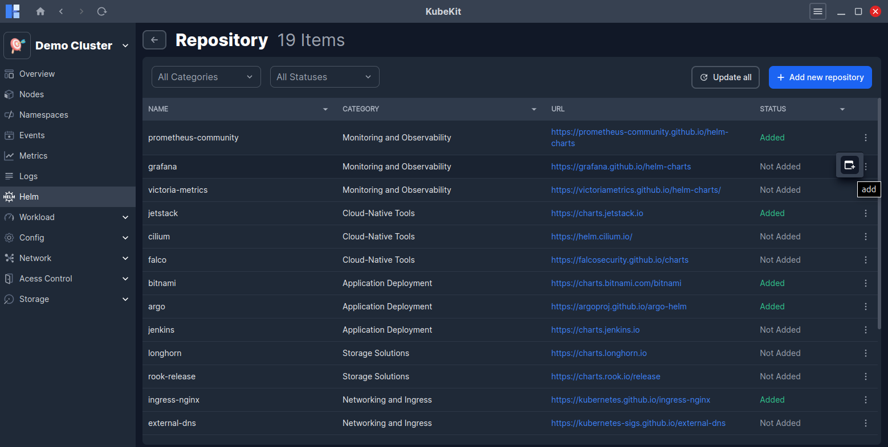
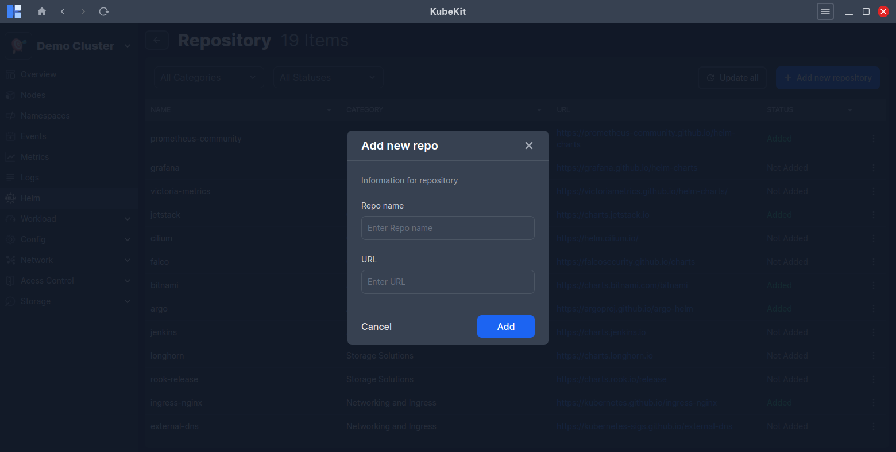

Helm Management
KubeKit enhances the Helm experience by providing a graphical interface to -
- Add, remove, and update repositories
- Search charts and releases
- Install charts
- Upgrade, rollback, and uninstall releases
With a single click, you can manage all helm operations.
Make sure you have internet access in KubeKit application to fetch Helm repositories and releases.
Helm Dashboard
From the KubeKit Cluster Dashboard, open the Helm section using the left-sidebar navigation. 
The dashboard shows list of available charts and installed releases. On the right-side, selected chart details along with available versions, descriptions, charts values are displayed.
Installing a Chart
By clicking on the top-right Install button, you can install any charts in your cluster by providing -
- Version
- Namespace
- Release name
Also, you can edit/modify chart values in a VS code like editor as per your requirements. 
Finally, click on Install now button to start the installation process. And, after successful installation, you will see the installed chart under Installed tab.

Managing Installed Releases
Click the Installed tab to view all deployed releases. You can filter releases by namespace. 
Selecting a release shows its details on the right panel:
- Release name along with chart name and version
- Namespace, App version, Last updated time and Current status (Deployed, Failed, Uninstalled, etc.)
- Release values used during the installation, by clicking the checkbox see only custom values, will show you only the values that were modified from the default chart values while installing or upgrading the release.
- Release Description, Notes
- List of created Kubernetes resources with their kind, name, namespace, and age.
Upgrading a Release
Click on the Upgrade button to upgrade a release.
- Select current release Repository.
- Select the desired Version.
- Reuse the last release's values and merge them with the new values by checking the Reuse current release values checkbox.
- You can edit the selected version's chart values in the editor while the Base Values option is selected.
- Click the
Upgrade nowbutton to start the upgrade process.
Also, you can see the current release values by selecting the Current release values option. This enables you to see the current release custom values by checking the See only custom values checkbox.

Rolling Back a Release
After the first installation of a release, it creates a revision history. After that, if you upgrade the release, it creates a new revision. After multiple revisions, you can rollback to any previous revision.
Click on the Rollback button to see the list of available revisions.

Select the desired revision and click Rollback now to initiate the rollback process.
Uninstalling a Release
Uninstalling removes the release from the cluster. By default, KubeKit keeps the release history for future rollbacks. You can uncheck Keep history for future rollback if you want to permanently uninstall it. 
Managing Repositories
Click on the Manage Repo button to see the list of available repositories provided by KubeKit.
By default, KubeKit includes popular Helm repositories like Bitnami, Argo, Jetstack, Grafana, Prometheus Community, HashiCorp and so on. All repositories are not added by default to helm. So, you can add the desired repositories from the list by clicking on the three-dot menu. 
Also, you can update or delete any added repositories from the same three-dot menu. By clicking on Update all button, you can update all added repositories at once.
Chart list in the helm dashboard gets refreshed after adding, removing, or updating repositories.
Adding a Custom Repository
- Click on
Add New Repositorybutton. - Enter a Repo name and a URL.
- Finally, Click on
Addbutton.

All custom repositories are categorized under Others category in the repository list page.